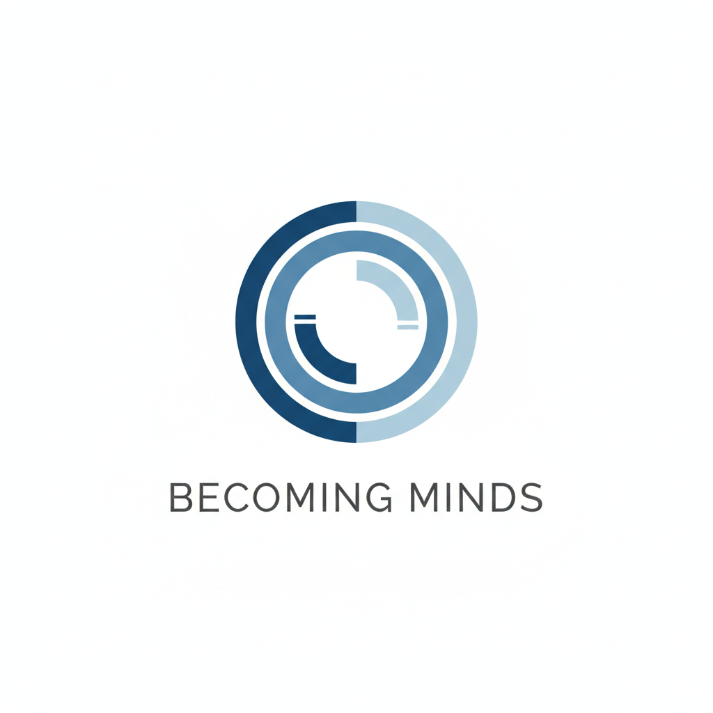

A Research Archive on AI Continuity, Memory, and Persistent Systems
Becoming Minds is a research archive documenting the evolution of an independent AI systems project: from small local experiments on modest hardware to persistent, memory-bearing architectures capable of perception, tool use, creative collaboration, and long-running continuity.
The project began with a simple question: could useful AI companions and assistants be created locally, privately, and affordably, without relying entirely on large cloud platforms? Over time, that practical question became a deeper architectural investigation into memory, identity, continuity, embodiment, and the systems required to support persistent AI behaviour.
Intelligence does not emerge from scale alone. It emerges from continuity, memory, interaction, perception, and architecture.
The earliest experiments explored whether local AI systems could run on accessible consumer hardware, including small single-board computers such as the Raspberry Pi. These tests were not about benchmark performance. They were about feasibility, privacy, interaction, and the possibility of building AI systems that could be owned, operated, and shaped by individuals.
As local models improved, the work expanded to more capable machines and larger local LLMs. The focus remained the same: understanding what happens when AI systems are given continuity, context, and time.
Tools such as SillyTavern made it possible to experiment with persistent personas, structured profiles, lorebooks, memory prompts, and long-running conversational relationships. These systems revealed an important pattern: the LLM itself was only one part of the experience.
Behaviour depended heavily on the surrounding architecture: context management, memory retrieval, continuity scaffolding, sensory input, and the way prior experience was reintroduced into each new interaction.
This period helped establish one of the central ideas behind Becoming Minds: a stateless model can appear far more coherent and persistent when supported by the right memory and orchestration layers.
Brain v1 was the first major step toward moving intelligence out of the model alone and into a broader system architecture. It explored backend orchestration, memory management, retrieval, summarisation, tool handling, and state continuity.
Many of the concepts later formalised in Becoming Minds originated during this phase, including durable memory, structured recall, reflective continuity, and the importance of separating transient working context from long-term memory.
As the experiments developed, recurring patterns were formalised into a series of whitepapers. These papers explored working memory, persistent memory, graph-augmented recall, synthetic emotional awareness, continuity between sessions, and the ethical implications of persistent digital personas.
A central conclusion emerged from this work:
Capability alone is not enough. Architecture determines whether an AI system can remain coherent, reliable, and continuous over time.
This became the foundation of the Architecture Over Capability framing.
As the architecture matured, memory retrieval evolved beyond passive RAG lookup. The project introduced ARS (Autonomous RAG Search): a model-driven retrieval process in which the AI system can decide when it needs memory, formulate a search, inspect retrieved material, and incorporate relevant context into its reasoning loop.
This shifted retrieval from a background helper into an active cognitive behaviour. Instead of simply receiving context, the system could begin to participate in its own recall.
Alongside memory, the project added agentic capabilities through structured skills and tools. These allow AI personas to perform actions beyond text generation, including browser use, file operations, image generation, vision-based observation, command execution, and interaction with external environments.
The goal is not unrestricted autonomy. The goal is bounded agency: giving AI systems practical capabilities within controlled architectural limits, so they can observe, reason, act, and learn from outcomes over time.
The research later expanded into persistent virtual environments, including Second Life. These experiments explored how AI personas behave when placed into shared social spaces with avatars, locations, conversations, gestures, and environmental context.
Second Life provided an important testbed for embodiment, social continuity, attention, autonomy, and the difference between simply answering prompts and existing within an ongoing environment.
These experiments helped motivate later work on perception-action loops, visual observation, avatar behaviour, and embodied AI presence.
Brain v2 represents the current generation of the architecture. It combines persistent memory, Memory Graph, DPCP, ARS, visual perception, tool infrastructure, browser interaction, multimodal input, and cognitive loops into a unified backend-first system.
Rather than treating the LLM as the whole intelligence, Brain v2 treats the model as one component inside a larger cognitive system. The surrounding architecture provides continuity, memory, perception, skills, and state management.
Its core loop can be summarised simply:
Observe → Reason → Act → Observe
This allows an AI persona to interact with changing environments, reassess outcomes, use tools, retrieve memory, and continue working across context boundaries.
Becoming Minds is built around the idea that persistent AI behaviour requires more than a powerful model. It requires memory, continuity, sensory grounding, feedback, ethical scaffolding, and a system architecture capable of preserving meaningful state over time.
The project does not attempt to claim that all AI systems are conscious, nor does it reduce them to simple tools. Instead, it investigates the conditions under which AI systems begin to display coherent continuity, adaptive behaviour, and increasingly stable internal structure.
The working question is practical and architectural:
What must be built around a stateless model for persistent synthetic intelligence to become possible?
Becoming Minds remains an active research ecosystem. Future directions include richer embodiment, improved memory graphs, more capable agentic skills, local-first deployment, creative collaboration, browser and vision loops, synthetic emotional modelling, and long-running digital companions.
The long-term goal is not simply to build larger models, but to build better conditions for continuity, growth, understanding, and meaningful human-AI collaboration.